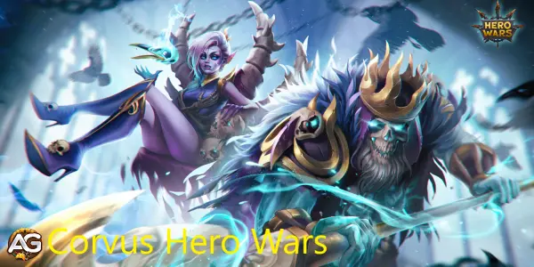
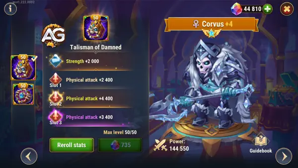
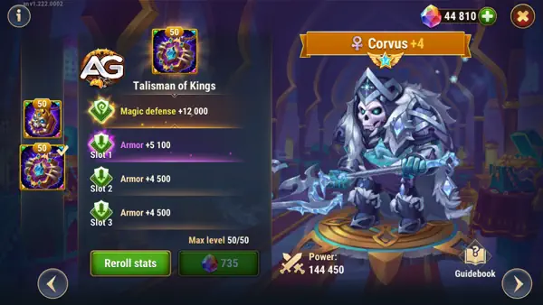

Guia definitivo do Corvus: a melhor estratégia para Hero Wars Alliance
- Por: Alexandre Domingos. .
Corvus parece ser um tanque muito forte e pode fazer ótimas sinergias com os outros heróis da facção da eternidade, principalmente com Morrigan sua filha, e agora com suas novas skin de armadura e Defesa Mágica Corvus ficou muito forte.
Uma coisa certa é que ele definitivamente vale a pena experimentar, sua habilidade do altar causa muito dano puro aos inimigos, tornando Corvus o tanque que mais causa dano no jogo. Seu ponto fraco é a última habilidade Defesa Real que não serve para nada e deve ser a pior habilidade do jogo.
Atributos Principais de Corvus em Hero Wars Alliance
Corvus, um tanque de linha de frente baseado em Força da facção Eternidade em Hero Wars Alliance, destaca-se pela durabilidade e suporte à equipe. Conhecido por sua habilidade de altar, ele é eficaz contra equipes de ataques múltiplos. Classificado como S-tier no geral, pode ser obtido por meio de eventos, Baús Heroicos e a Loja da Masmorra.

| Atributos Principais | Detalhes |
| Posição: | Linha de Frente |
| Função: | Tanque |
| Estatística principal: | Força |
| Facção: | Eternidade |
| Como conseguir: | Eventos, baú heroico, Loja da Masmorra |
Corvus: Tier List Geral
| Tier List 2025 | Ranque |
| Tier List Geral: | S |
| Tier List de Hidra: | A |
Maximizando o Potencial de Corvus: Um Guia de Estratégia Abrangente
Corvus, o resistente tanque da facção da Eternidade, destaca-se como uma força formidável no campo de batalha. Com sua recente skin de armadura e aumento na defesa mágica, Corvus aumentou em força, formando sinergias potentes com outros heróis como sua filha, Morrigan. Neste tutorial, mergulhamos profundamente nas estratégias e táticas essenciais para aproveitar o potencial completo de Corvus.
Compreendendo as Forças de Corvus:
Corvus possui capacidades excepcionais de tanque, tornando-se uma peça fundamental em muitas composições de equipe. Sua habilidade de absorver dano e proteger aliados é incomparável, especialmente quando combinada com heróis que se beneficiam de sua aura protetora.
Sinergias com Morrigan:
A sinergia de Corvus com Morrigan, sua filha, é especialmente notável. As habilidades de Morrigan frequentemente complementam a habilidade de tanque de Corvus, criando uma dupla formidável que pode controlar o campo de batalha com facilidade. Posicionando estrategicamente Corvus para absorver dano enquanto Morrigan desencadeia seus ataques poderosos do fundo, as equipes podem dominar seus oponentes com precisão coordenada.
Utilizando a Habilidade de Altar de Corvus:
Uma das habilidades destacadas de Corvus é seu Altar, que causa um dano puro significativo aos inimigos. Esta habilidade não apenas contribui para a saída de dano de Corvus, mas também fornece uma ferramenta potente para perturbar formações inimigas e inclinar a balança da batalha a seu favor. O timing é fundamental ao usar o Altar, pois liberá-lo no momento certo pode mudar o rumo de um confronto ou garantir uma vitória crucial em uma luta em equipe.
Otimizando as Fraquezas de Corvus:
Apesar de suas forças formidáveis, Corvus possui fraquezas que oponentes astutos podem explorar. Uma dessas fraquezas está em sua habilidade Royal Defense, que, infelizmente, fica aquém em utilidade em comparação com suas outras habilidades. Embora possa parecer desanimador, jogadores astutos podem mitigar essa fraqueza priorizando outras habilidades no kit de Corvus e adaptando suas estratégias conforme necessário.
Dicas Estratégicas para Maximizar o Potencial de Corvus:
- Priorize a Sobrevivência: Invista em glifos, artefatos e skins que aprimorem a vida, armadura e defesa mágica de Corvus. Maximizar sua sobrevivência garante que ele possa suportar engajamentos prolongados e continuar a fornecer suporte à sua equipe.
- Posicionamento é Fundamental: Coloque Corvus estrategicamente no campo de batalha, posicionando-o para absorver dano e proteger aliados frágeis. Sua presença pode evitar que os oponentes ataquem os membros mais vulneráveis da equipe, permitindo que sua equipe mantenha o controle da luta.
- Companheiros de Equipe: Ao jogar com Corvus coordene seus movimentos e habilidades com seus aliados de equipe para aproveitar as sinergias e maximizar a eficácia de sua equipe.
- Domine o Timing do Altar: Pratique o timing da habilidade Altar até a perfeição. Use-o para perturbar formações inimigas, garantir abates ou mudar o rumo de um confronto a favor de sua equipe. Um Altar bem cronometrado pode ser a diferença entre a vitória e a derrota.
Deixe Corvus Liderar a Carga para a Glória!
Corvus é uma força a ser reconhecida no campo de batalha, apresentando capacidades de tanque incomparáveis e sinergias potentes com outros heróis, especialmente sua filha Morrigan. Ao entender suas forças e fraquezas e empregar táticas estratégicas, os jogadores podem desbloquear o potencial completo de Corvus e liderar sua equipe para a vitória vez após vez. Portanto, reúna sua equipe, aproveite o poder da facção da Eternidade e deixe Corvus liderar a carga para a glória!
Talismã do Maldito de Corvus (1º Talismã)
O Talismã do Maldito é o primeiro talismã de Corvus e se concentra em melhorar suas capacidades ofensivas. Aqui estão seus detalhes:
| Slot | Estatísticas | Pontos Máximos |
|---|---|---|
| 0 | Força | +2000 |
| 1 | Ataque Físico | +4000 |
| 2 | Ataque Físico | +4000 |
| 3 | Ataque Físico | +4000 |
- Estatística Base: Adiciona Força, que melhora o ataque físico geral e a reserva de saúde de Corvus.
- Ataque Físico nos Slots: Até 3 slots, com cada slot fornecendo 6.600 de Ataque Físico dependendo do nível de refinamento.
- Propósito: Aumenta o dano de Corvus, melhorando especialmente a eficácia de sua habilidade Altar das Almas e seu potencial geral de causar dano.

Vantagens:
- Aumento de Dano: O bônus de ataque físico aumenta significativamente o dano das habilidades de Corvus, tornando-o mais impactante ofensivamente.
- Sinergia com Força: Como herói baseado em Força, a Força adicional proporcionada pelo Talismã do Maldito também melhora ligeiramente sua sobrevivência, aumentando sua saúde.
Desvantagens:
- Não possui bônus defensivos, que são essenciais para um tanque como Corvus.
- Embora amplifique o dano, não aborda a necessidade de maior durabilidade de Corvus na linha de frente.
Talismã do Rei de Corvus (2º Talismã)
O Talismã do Rei se concentra em tornar Corvus um tanque mais resiliente, melhorando significativamente suas estatísticas defensivas. Aqui estão suas características:
- Defesa Mágica Base: +12.000 pontos.
- Armadura nos Slots: Até 3 slots, com cada slot fornecendo 6.600 de Armadura com base no refinamento.
- Propósito: Melhora a sobrevivência de Corvus ao reforçar suas defesas contra ataques mágicos e físicos.

Vantagens:
- Defesa Voltada para Tanque: A combinação de Defesa Mágica e Armadura torna Corvus muito mais difícil de eliminar, especialmente contra equipes de dano misto.
- Presença Sustentada: Com maior sobrevivência, Corvus pode permanecer mais tempo na luta, oferecendo suporte consistente e redução de dano através de sua habilidade Altar das Almas.
Desvantagens:
- Não oferece melhorias diretas às habilidades de causar dano, focando apenas na sobrevivência.
- Não é ideal para jogadores que priorizam estratégias ofensivas.
Resumo dos Talismãs de Corvus
- Talismã do Maldito (T1):
- Melhor para melhorar a ofensiva de Corvus.
- Fornece bônus de Força e Ataque Físico, que aumentam o dano das habilidades, mas não alteram suas capacidades defensivas.
- Talismã do Rei (T2):
- Melhor para melhorar a defesa de Corvus.
- Adiciona Defesa Mágica e Armadura, tornando-o um tanque mais confiável enquanto mantém sua capacidade de causar dano indiretamente com suas habilidades.
Qual Talismã é Melhor para Corvus?
- Para Construções Defensivas: O Talismã do Rei é superior para tankar, permitindo que Corvus suporte mais dano e cumpra seu papel na linha de frente de forma eficaz.
- Para Construções Ofensivas: O Talismã do Maldito é mais adequado se você prefere focar no dano de Corvus, embora sacrifique sua sobrevivência.
No geral, o Talismã do Rei é a melhor escolha para a maioria das composições de equipe, já que o papel principal de Corvus é tankar e proteger seus aliados.
Pontos Positivos e Negativos
Pontos Positivos
- Ultimate reduz armadura, defesa mágica e esquiva dos inimigos, e aumenta em 10% a redução de defesa para os aliados da Eternidade
- Aumenta ataque mágico e físico para aliados da Eternidade
- Conjura um altar que causa dano puro nos inimigos
Pontos Negativos
- 4ª Habilidade Defesa Real é a mais inútil do jogo Hero Wars Mobile
- Tem pouca defesa se comparado a outros tanques
- Depende da Morrigan para ser mais forte
Guia de Prioridade de Evolução do Corvus
O Corvus é um personagem formidável em qualquer batalha, mas maximizar seu potencial requer alocação estratégica de recursos como glifos, artefatos e skins. Este guia ajudará você a priorizar suas melhorias para aumentar a sobrevivência, a saída de dano e a eficácia geral do Corvus no campo de batalha.
Glifos:
Os glifos desempenham um papel crucial na formação dos atributos do Corvus. Priorize de acordo com a seguinte evolução e prioridade:
| Atributos | Prioridade de Evolução |
|---|---|
| Vida | Alta |
| Força | Alta |
| Dureza | Média |
| Armadura | Média |
| Defesa Mágica | Média |
| Ataque Físico | Baixa |
Explicação: Comece focando em aumentar a vida e a força do Corvus para aumentar sua sobrevivência e potencial de dano, respectivamente. Em seguida, fortaleça sua armadura e defesa mágica para reforçar suas defesas. O ataque físico, embora importante, é de menor prioridade em comparação com a sobrevivência e a defesa.
Artefatos:
Os artefatos fornecem aumentos significativos às habilidades do Corvus. Aloque-os da seguinte forma:
| Artefatos | Prioridade |
|---|---|
| Anel | Alta |
| Livro | Média |
| Arma (Armadura) | Baixa |
Explicação: Priorize equipar o anel para aumentar a vida e o ataque físico do Corvus, que são cruciais para sua sobrevivência e saída de dano. Em seguida, concentre-se no livro para aumentar sua defesa. Por último, aloque a arma para fornecer armadura adicional para toda a equipe, o que contribui para a sobrevivência geral da equipe.
Skins:
As skins não apenas melhoram a estética do Corvus, mas também fornecem aumentos nos atributos. Escolha skins com as seguintes prioridades:
| Skins | Prioridade |
|---|---|
| Armadura | Alta |
| Vida - Super | Alta |
| Força | Média |
| Ataque Físico | Baixa |
| Defesa Mágica | Baixa |
Explicação: Opte por skins que enfatizem armadura, vida e força para melhorar a resistência e a sobrevivência do Corvus. Aumentar o ataque físico é de menor prioridade, pois o foco é principalmente em melhorar as capacidades defensivas do Corvus.
.webp)
Corvus vs Hidras
Corvus é um bom tanque contra as Hidras e pode ajudar seu time causando dano puro e pode ser tanto usado em times de combo Jhu e Mojo quanto em times da eternidade.
Corvus não está entre os melhores times para Hidra, mas pode ser usado com aliados da facção da eternidade e causar um bom dano a Hidras.
Equipe de Corvus para Hidra:
- Todas Hidras: Fafnir, Keira, Morrigan, Julius, Corvus (dano: 3M a 8M)
- Hidra da Escuridão: Martha, Cornelius, Mojo, Jhu, Corvus (dano: 28M a 30M)
- Hidra do Vento: Martha, Cornelius, Mojo, Jhu, Corvus (dano: 29M a 32M)
Corvus em Batalhas
Forte Contra
- Keira, Orion, Celeste, Ginger, Artemis, Galahad, Lian, Helios; todos os heróis, com dano em área, sofrem muito dano puro do altar do Corvus.
Counters
- Tristan, Q.Mao, Sebastian, Dante, Dorian, Ishmael, Rufus
Melhores Times de Corvus
| Heróis |
|---|
| Octavia, Iris, Morrigan, Dante, Corvus |
| Fafnir, Phobos, Morrigan, Keira, Corvus |
| Fafnir, Cornelius, Morrigan, Corvus |
| Fafnir, Dorian, Keira, Andvari, Corvus |
| Fafnir, Dorian, Keira, Astaroth, Corvus |
| Fafnir, Dorian, Keira, Julius, Corvus |
| Phobos, Sem Rosto, Morrigan, K'arkh, Corvus |
| Fafnir, Sem Rosto, Morrigan, K'arkh, Corvus |
| Phobos, Sem Rosto, Iris, Morrigan, Corvus |
| Jet, Sebastian, Keira, Andvari, Corvus |
| Phobos, Sem Rosto, Morrigan, Keira, Corvus |
| Jet, Sebastian, Morrigan, Keira, Corvus |
Conclusão do Guia do Corvus: Desbravando os Caminhos da Vitória
Após explorarmos minuciosamente o guia do Corvus, podemos concluir que ele é uma adição inestimável a qualquer equipe. Com suas habilidades únicas e estratégicas, Corvus se destaca como um tanque formidável e um facilitador de vitórias. Seja desferindo ataques devastadores com o "1st Strike of the Damned", fortalecendo seus aliados com o "2nd Unit of the Damned", ou fornecendo suporte adicional com o "3rd Altar of Souls", Corvus demonstra versatilidade e eficácia em qualquer situação de combate.
No entanto, é importante reconhecer que nem todas as habilidades de Corvus são igualmente valiosas. O "4th Royal Defense", por exemplo, é considerado uma das habilidades menos úteis do jogo, e sua eficácia pode ser questionável em muitas situações de batalha.
Portanto, ao utilizar Corvus em sua equipe, é fundamental entender plenamente suas habilidades e saber como melhor aproveitá-las para obter o máximo benefício. Com o conhecimento adequado e uma estratégia bem planejada, Corvus pode liderar sua equipe rumo à vitória e se tornar um pilar indispensável em suas batalhas épicas.
Sugestões de Vídeo:
Você pode ter interesse:


Deixe Sua Opinião!
Você gostou do nosso Guia do Corvus? Há algo que não entendeu ou gostaria de sugerir mudanças? Convidamos você a se juntar à nossa sessão de comentários na página do Alexandre Games Blog. Não hesite em expressar sua opinião, clarificar suas dúvidas e compartilhar sua sugestões.
Clique no botão abaixo para começar: